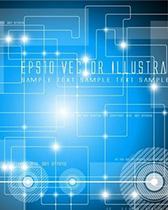
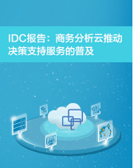
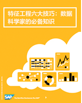
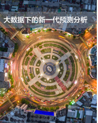
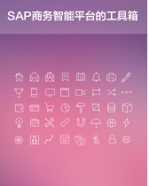
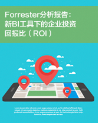

如何选择数据平台和商务分析工具？
顶尖企业都在用什么？
-
顺丰速递：通过引入SAP最佳业务实践，顺丰首家实现全产业链集成创新应用管理平台，全面提升作业自动化水平，积极改善财务管理能力，深入优化业务流程，显著提升集团管控能力和业务效率，有效支撑未来多元化业务全球布局，积极推动“互联网+”时代的快递运输产业结构升级。
-
意大利铁路：基于SAP HANA实现预测性维护。维护服务的总体成本降低10%，每年节省近1亿欧元。预测性的动态计划维护达到50%，大幅降低了计划性维护和修正性维护。同时，因为减少了设备故障、延误的影响，乘客们也都非常开心，意大利铁路公司提高了声誉和客户满意度。
-
中国商飞：通过引入SAP解决方案，全力帮助中国商飞打造世界级航空高端“智”造，促进项目的研制成功和商业成功，实施体制机制创新、技术创新、管理创新，提高制造能力和管理水平，推动中国航空工业向更高领域迈进。
-
中微半导体：采用SAP HANA实现实时供应链质量管控。依托SAP HANA高性能的内存内计算，建立实时SPC质控体系，不仅实现了自动检测，更能通过对数据的分析感知，实现趋势预测和实时预警。
-
索菲亚：借助SAP HANA新一代大数据计算平台，帮助索菲亚全面整合业务数据，规范公司流程，提升系统响应速度，充分挖掘业务数据价值，增强管理决策能力，为企业未来高速发展奠定坚实基础。
-
华为：华为通过引入SAP HANA实时应用平台，结合创新的华为SAP HANA一体机，打造充满活力的数字核心系统，全面提升计算性能，灵活快速响应业务需求，积极激发企业活力，化繁为简，引领共同客户构建产业生态圈，共建全联接世界。
-
戴尔：戴尔选用了 SAP HANA?平台集中数据，自动化的商务智能平台加速报表和分析。戴尔降低了大约50%的BI成本，甚至未来会持续降低。对于源系统的数据访问和操作需求减少了80%，为销售团队赢取时间关注于客户的需求。
-
NBA.Com：借助SAP HANA平台提供的技术支持，NBA.com可以支持成千上万人的同时搜索以及上万条并发实时数据搜索请求所有比赛数据在赛事结束5分钟内即可上传刷新，而这些提升对于NBA赛事在全球范围内逾4.5亿球迷而言，极具吸引力。
数据管理三大利器
商务分析五大利器
2017不可多得的数据管理白皮书
-
CIO指南：大数据的新“玩”法
-
数字化转型中的新一代数据管理
-
IT管理者如何实现端到端卓越性能
-
智能管理拥抱数字经济，重新构想无限可能
-
变革、行动与创新：面向数字经济的单一数据平台
-

用情境感知能力，打造更智慧的数字化企业
-

灵活定义流程，全面的主数据管理解决方案是如何诞生的？
-
预测分析如何帮助企业开发更多有价值的客户？
-
挑选内存数据库应注意的 10 大问题
-
IDC报告：统一数据，打造敏捷型企业
2017不可多得的商务分析白皮书
-

IDC商务分析云解决方案，推动决策支持服务的普及
-
商务分析云疑难解答手册--简约而不简单
-
教你如何用一款产品，让所有用户尽享分析之便
-

特征工程六大技巧：数据科学家的必备知识
-

大数据下的新一代预测分析
-
一款工具是如何解决众多不同行业的顽疾的
-
自信地预测未来，实现更卓越的业务成果
-
用更好的商务智能平台，做更好的商业决策
-
新一代商务智能工具，诠释新解决方案价值
-
IDC分析师：实施分析战略，加速获取洞察
-

SAP商务智能平台的工具箱
-

Forrester分析报告：新BI工具下的企业投资回报比（ROI)
-
首席信息官现代数据仓库指南
-
面向数字化企业的下一代数据仓库
-
用户手册：BW/4HANA常见应用问题解答
合作伙伴招募

SAP 提供行业领先的完整解决方案组合，希望与大数据领域生态伙伴精诚合作，为双方在现有的业务基础上赢得更多客户和市场机会，并帮助客户实现数字化转型，在数字经济时代领先竞争。
欢迎垂询:
SAP商务分析解决方案： Power Ren (18661756115 power.ren@sap.com)
SAP数据管理与大数据平台：Deng Hua (13925157726 mailto:hua.deng@sap.com)
SAP商务分析解决方案： Power Ren (18661756115 power.ren@sap.com)
SAP数据管理与大数据平台：Deng Hua (13925157726 mailto:hua.deng@sap.com)